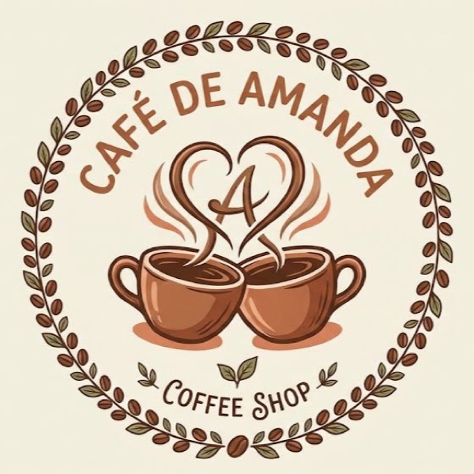

Ají de gallina
Pollo deshilachado en crema de ají amarillo, con arroz y papa.
San Borja · Lima
Desayunos, almuerzos criollos y café recién preparado en San Juan Masías. Un espacio pequeño, atendido por sus dueños.
Próxima apertura · Cal. El Comercio 133

La carta
Platos caseros de todos los días, con porciones honestas. La carta rota con lo que hay fresco en el mercado.
Nosotros
Café de Amanda nace en San Juan Masías con una idea simple: servir lo que nos gusta comer. Platos caseros de todos los días, café bien preparado y una mesa donde siempre hay lugar.
Atendemos nosotros mismos, sin apuro y sin pretensiones. Si vienes seguido, ya sabemos cómo te gusta el café.
Visítanos
Estamos en San Juan Masías, a pocas cuadras de la Av. San Borja Norte.